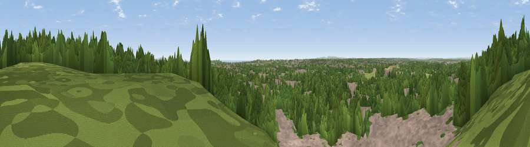

Viewpoint near Holdenhurst
#26327 in England · top 37% of its area beats it · near HoldenhurstThe view, rendered

A 360° render of this exact spot computed from the terrain model, tree cover and land cover — summer colours, afternoon light, calibrated against photographs of famous viewpoints. Real trees, hedges and buildings will differ in detail.
The panorama
Grey silhouette: terrain skyline in each direction (720 bearings, Earth curvature and refraction included). Dashed green: skyline with trees (+15 m) and buildings (+8 m) as obstacles. Blue strip: how far the ground is visible on each bearing.
Where the view opens
Wedge length = distance to the farthest visible ground on that bearing (vegetation-aware). Rings at 10, 25 and 50 km.
What fills the view
49% woodland · 38% built-up · 10% grassland · 2% cropland ·
Angular shares of the visible panorama (visual magnitude), not map area. Landscape diversity 0.46 (0–1 Shannon).
Key numbers
More beautiful places nearby
The staircase of upgrades: each row has a higher view potential than everything closer. Driving times are estimates from straight-line distance, calibrated against real road routing — check an actual route before setting out.
| Place | Direction | Drive | Score |
|---|---|---|---|
| Viewpoint near Holdenhurst | NNW · 1 km | ~3 min | 49.2 |
| Viewpoint near Hurn | NNW · 2 km | ~5 min | 53.7 |
| Warren Hill | SSE · 5 km | ~11 min | 60.1 |
| Viewpoint near Corfe Mullen | W · 16 km | ~28 min | 60.9 |
| Viewpoint near Studland | SW · 16 km | ~28 min | 62.6 |
| Viewpoint near Studland | SW · 17 km | ~30 min | 80.9 |
| Viewpoint near Studland | SW · 17 km | ~30 min | 82.2 |
| Ballard Down | SW · 18 km | ~31 min | 83.2 |
50.75600, -1.79829 · source: screening · position refined by local search. Computed location — check access rights before visiting.